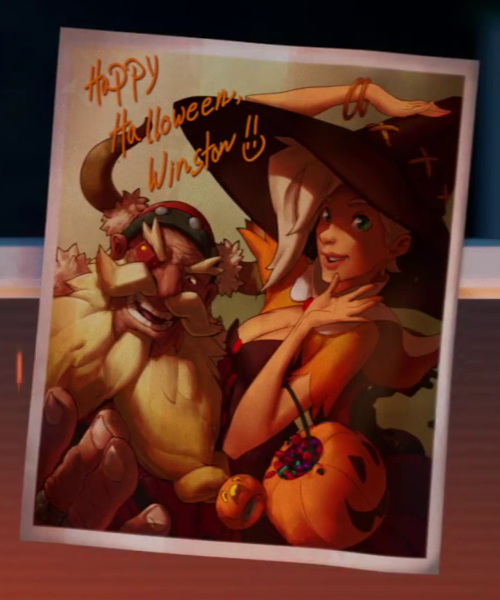

Mercy's wings are available as a cosmetic item in Diablo III for players who purchased the Origins Edition.
The official website used to state she's 34 years old, but in Winston's files in Recall she was shown to be 37. Value on the site has since been changed to match the one from Recall.
A magazine image of Mercy could be found in an outhouse on Route 66. The magazine was removed in a later patch.
Mercy's voice actress was changed during the beta to one who could speak fluent German and provide German voice lines. The developers feel this better captures the essence of her character. So far she is the only character in the game that has been recast.
The Witch's voice line when casting resurrect, "My servants never die!", was added for Mercy's Witch skin due to fan request.
In reply to a support ticket, Blizzard jokingly stated that Mercy's heart "belongs to Roadhog".
Mercy's line "Medic! Wait that's me...." may be a reference to Team Fortress 2's option to call the Medic.

Mercy in a witch costume with Torbjörn on Halloween